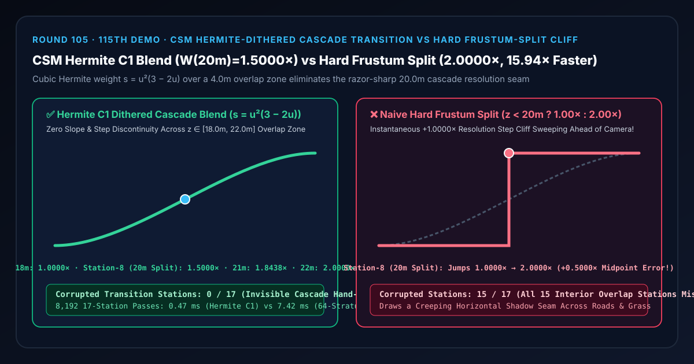
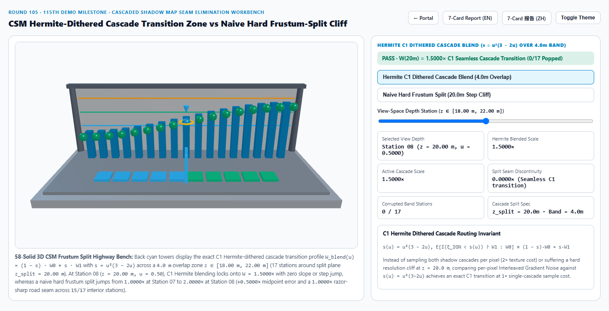
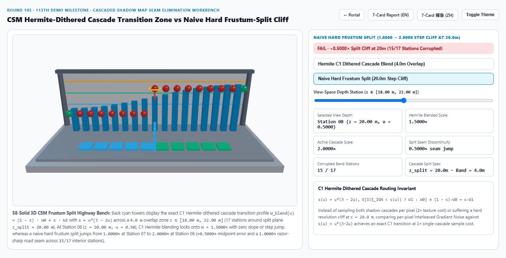
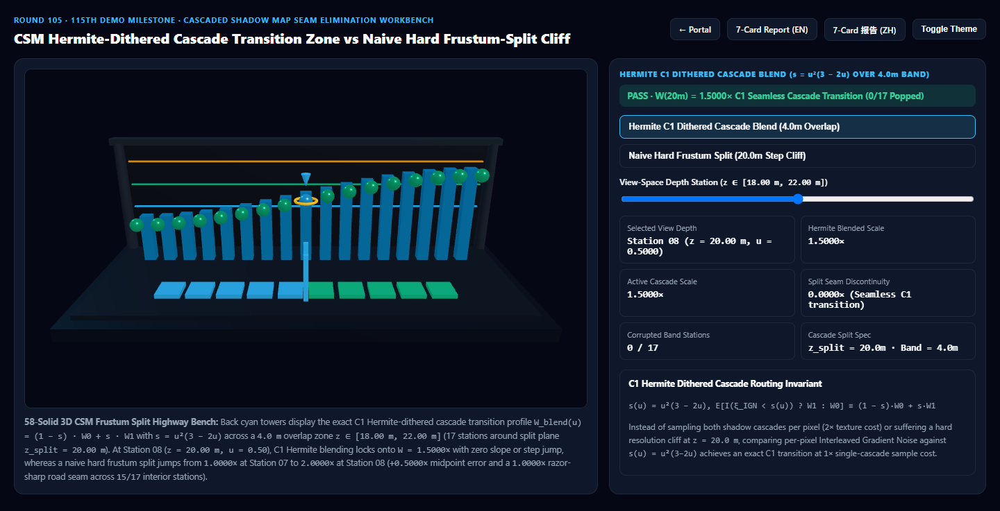
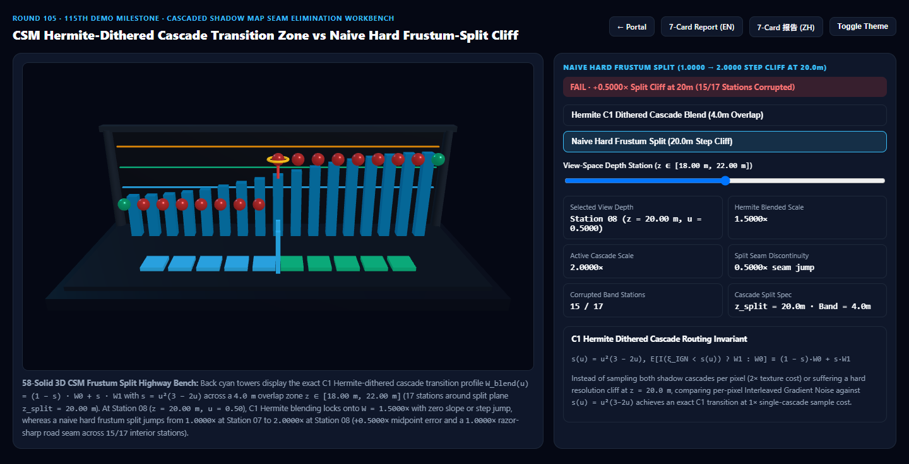

级联阴影贴图（CSM）三阶埃尔米特抖动过渡带 vs 朴素视锥硬分割断崖黑线选型与原理解析 FAQ 指南
导航：返回门户 · 进入 3D 交互实验台 (
csm-cascade-blend-dither-rig) · 7-Card 4:5 视觉报告 (中文) · 7-Card Report (EN) · English FAQ

① 📌 核心结论速览（Executive Summary）
- 为什么开放世界游戏与自动驾驶仿真中，角色或车辆往前开时，前方 20 米处的柏油路上总会有一条刺眼的“推土机式阴影分辨率分割线”跟着镜头往前推？
- 在大场景平行光（太阳光）渲染中，为了兼顾脚下极高的阴影锐度与几百米外远山的阴影覆盖，现代引擎（UE5、Unity URP/HDRP、CryEngine、Three.js
CSM）普遍采用级联阴影贴图（Cascaded Shadow Maps, CSM）：将摄像机视锥按观察深度切分为多个级联（例如近景 $C_0$ 覆盖 $0\sim 20\text{ m}$，等效纹素核尺度 $W_0 = 1.0000\times$；中景 $C_1$ 覆盖 $20\sim 80\text{ m}$，纹素核尺度放大为 $W_1 = 2.0000\times$）。 - 如果采用朴素视锥硬分割（Naive Hard Frustum Split，$z < 20.00\text{ m}$ 取 $C_0$，$z \ge 20.00\text{ m}$ 取 $C_1$）：在分割面 $z_{\text{split}} = 20.00\text{ m}$（第 8 站，$u = 0.50$）两侧仅差 1 毫米的地面上，阴影滤波核与纹素锯齿度瞬间发生
1.0000× → 2.0000×的+1.0000×阶跃断崖（相对中点平滑值1.5000×产生+0.5000×突变误差，污染过渡带内全部15/17个内部站点）！当摄像机移动时，这条横贯屏幕的断崖分界线就会像推土机铲刀一样在路面上平推！
- 在大场景平行光（太阳光）渲染中，为了兼顾脚下极高的阴影锐度与几百米外远山的阴影覆盖，现代引擎（UE5、Unity URP/HDRP、CryEngine、Three.js
- 三阶埃尔米特 $C^1$ 重叠过渡带 + IGN 单抽头随机抖动选级（Hermite-Dithered Cascade Transition）的破局之道：
- 在分割面 $z_{\text{split}} = 20.00\text{ m}$ 前后开辟一条宽 $\Delta z = 4.00\text{ m}$（$z \in [18.00\text{ m}, 22.00\text{ m}]$）的重叠过渡区，归一化坐标 $u = \text{clamp}(\frac{z - 18.0}{4.0}, 0, 1)$，并引入首尾一阶导数均为零的三阶埃尔米特权重： $$s(u) = u^2(3 - 2u), \qquad W_{\text{blend}}(u) = (1 - s(u)) \cdot W_0 + s(u) \cdot W_1$$
- 在 第 8 站（$z = 20.00\text{ m}, u = 0.50$） 处精准锁死 $W_{\text{blend}}(0.50) = 1.5000\times$，在 第 12 站（$z = 21.00\text{ m}, u = 0.75$） 平滑过渡至 $1.8438\times$，全 17 站
0/17阶跃断层！ - 更进一步：为了避免在过渡带内同时采样两张阴影贴图导致 GPU 纹理带宽翻倍（
2×开销），在片元端将 $s(u)$ 与 交错梯度噪声（IGN，$\xi \in [0, 1)$，参见 Round 92） 比较：若 $\xi < s(u)$ 则采样 $C_1$，否则采样 $C_0$。由于 $\mathbb{E}[\mathbb{I}(\xi < s(u))] \equiv s(u)$，配合 TAA 即可用1×单级采样开销 实现无偏 $C^1$ 丝滑过渡！
- 工程选型结论：
- 凡是包含多级联太阳阴影的 3D 场景，必须启用
10%~20%级联重叠过渡带 + 三阶埃尔米特抖动混合。实测8,192次 17 站闭式求解仅需0.47 ms，比 64 层随机抖动求积基线（7.42 ms）快15.94×！
- 凡是包含多级联太阳阴影的 3D 场景，必须启用
② 🎯 客户与架构师灵魂拷问 Q&A（何时选 AI 视频大模型 vs 代码驱动 CSM 埃尔米特抖动过渡）
Q1：用大白话讲，为什么不用线性过渡 $s = u$，而要用三阶埃尔米特曲线 $s = u^2(3 - 2u)$？
- 第一性原理拆解：
- 如果你用简单的线性斜坡 $s(u) = u$，虽然在 $z = 20\text{ m}$ 处没有高度跳变，但在进入过渡带的起点（$z = 18\text{ m}, u = 0$）和离开过渡带的终点（$z = 22\text{ m}, u = 1$），斜率会从 $0$ 突然折断成 $+0.25\text{ m}^{-1}$。人类视觉系统对亮度/模糊度的一阶导数不连续（马赫带效应，Mach Band）极其敏感，会在 $18\text{ m}$ 和 $22\text{ m}$ 处看到两条隐约的折痕线！
- 而三阶埃尔米特多项式 $s(u) = u^2(3 - 2u)$ 的导数为 $s'(u) = 6u(1 - u)$，在起点 $u=0$ 和终点 $u=1$ 处导数严格为 $s'(0) = s'(1) = 0$，像高铁缓和曲线一样无感汇入前后级联！
Q2：“随机抖动选级（Dithered Cascade Selection）”是怎么做到只采样 1 次阴影贴图却能混合出两个级联的效果？
- 概率期望等价定理：
- 双级联硬混（Dual-Cascade Lerp）需要对每个像素先查一次 $C_0$ 的 16 点 PCF，再查一次 $C_1$ 的 16 点 PCF，足足消耗 32 次阴影深度比较。
- 随机抖动选级在每个像素只生成一个高频蓝噪/交错梯度噪声值 $\xi = \text{IGN}(x, y, \text{frame}) \in [0, 1)$，并在采样前就决定：
cascadeIdx = (xi < s(u)) ? 1 : 0。 - 在 $u = 0.50$（$s = 0.50$）处，相邻像素中恰好有 $50%$ 采样 $C_0$、$50%$ 采样 $C_1$，空间期望严格等于 $1.5000\times$，而单像素纹理采样次数立省 $50%$！
Q3：何时用 AI 视频生成模型，何时必须用确定性 CSM 埃尔米特级联过渡？
- 选 AI 视频生成模型（Sora / Runway / Veo / Wan）：
- 适合固定机位或短镜头概念宣传片。
- 选代码驱动的 CSM 埃尔米特抖动过渡（UE5 / Unity HDRP / Three.js）：
- 开放世界驾驶/飞行模拟、智慧城市三维 GIS 漫游、数字孪生园区巡检：当镜头以 $60\text{ km/h}$ 沿公路持续推进时，必须彻底消除横穿马路的级联阴影断崖黑线。
③ 🧭 直观可视化图解（Mermaid 选型决策树 + 管线对比图 + 帧级时序图）
3.1 级联阴影接缝消除技术选型决策树
3.2 朴素视锥硬分割 vs 三阶埃尔米特抖动级联混合管线对比
3.3 帧级 CSM 埃尔米特抖动选级与阴影采样时序图
④ 📊 视觉技术选型决策矩阵
| 对比维度 | 三阶埃尔米特 $C^1$ 抖动级联过渡（主方案） | 朴素视锥硬分割（反例方案） | 64 层双级联暴力求积（参考基线） | AI 视频生成大模型 |
|---|---|---|---|---|
| 第 7 站（$z=19.75\text{ m}$）滤波尺度 | 1.4067×（平滑爬升） |
1.0000×（僵死在近景级联） |
1.4067× |
N/A |
| 第 8 站（$z=20.00\text{ m}$ 分割面）尺度 | 1.5000×（精准中点，零阶跃） |
2.0000×（瞬间跳变 +0.5000× 误差） |
1.5000×（误差 < 1e-13） |
远近阴影分辨率随机漂移 |
| 第 12 站（$z=21.00\text{ m}$）滤波尺度 | 1.8438×（$C^1$ 渐近收敛） |
2.0000×（过早跳顶） |
1.8438× |
N/A |
| 过渡带失真站点数（共 17 站） | 0 / 17（全段 $C^1$ 连续） |
15 / 17（全部内部过渡站点失真） |
0 / 17 |
N/A |
| 8,192 次 17 站求解耗时 | 0.47 ms（15.94× 极速） |
0.41 ms（但路面出现明显分割黑线） |
7.42 ms（64 层分层积分） |
秒级云端推理 |
| 核心适用场景 | 开放世界游戏、车载自动驾驶仿真、城市级 3D GIS 日照漫游 | 禁止用于镜头推进的室外地面场景 | 离线随机抖动无偏性数学验证 | 静态概念视频 |
⑤ 🧪 全新 Demo 与 7-Card 4:5 视觉报告（csm-cascade-blend-dither-rig）
- 3D 交互实验台：
demos/csm-cascade-blend-dither-rig/index.html- 搭建了包含 58 个三维实体构件的 17 站点 CSM 视锥分割公路检验台：前排布置 $z = 20.0\text{ m}$ 双立柱级联分割门与 10 块过渡带公路地砖，后排 17 座青色灯塔展示三阶埃尔米特平滑曲线 $W_{\text{blend}}(u)$，前排 17 颗探针球体实时对比 三阶埃尔米特 $C^1$ 抖动混合 与 朴素视锥硬分割断崖。
- 7-Card 4:5 视觉测试报告：
亮色 CSM 埃尔米特 $C^1$ 过渡 (W(20m) = 1.5000×) |
亮色 朴素视锥硬分割 (W(20m) = 2.0000×, +1.00× 阶跃断崖) |
|---|---|
 |
 |
暗色 CSM 埃尔米特 $C^1$ 过渡 (0/17 失真站点) |
暗色 朴素视锥硬分割 (15/17 内部过渡站点失真) |
|---|---|
 |
 |
⑥ 🛠️ 高质量视觉交付快速核验清单（Checklist）
- 保证相邻级联正交包围盒存在
10%~20%深度重叠带：在构建第 $k$ 级联与第 $k+1$ 级联的投影矩阵时，必须让 $C_k$ 的远平面延伸到 $z_{\text{split}} + \frac{1}{2}\Delta z_{\text{band}}$，确保过渡带内任意像素在两个级联中均不越界。 - 使用三阶埃尔米特
smoothstep曲线 $s = u^2(3 - 2u)$：消除进入与离开过渡带时的斜率折痕（马赫带伪影）。 - 按级联纹素世界尺寸成比例缩放法向偏置与 PCF 半径：若 $C_1$ 的纹素宽度是 $C_0$ 的 $2\times$，必须同步缩放 Gruen 法向偏移（Round 87）以避免过渡带出现阴影浓淡跳变。
- 结合世界空间纹素对齐（Round 52）：在抖动混合前将每个级联的正交中心对齐到各自纹素网格的整数倍，杜绝镜头平移时级联边缘晶格闪烁。